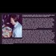

<html>
 <head>
  <title>
   THE ALEX JONES APOLOGY EXPOSED!
  </title>
  <meta content="Post on /v/Pizzagate archived on 2017-03-29 by MathPhilo." name="description"/>
  <meta content="THE ALEX JONES APOLOGY EXPOSED!" property="og:title"/>
  <meta content="Post on /v/Pizzagate archived on 2017-03-29 by MathPhilo." property="og:description"/>
  <link href="../../page.css" rel="stylesheet"/>
  <meta content="https://voat.pizzagate.hackliberty.org/thumbnails/3b/f7/3bf7b68f-eb8e-43b7-ac00-a6debfa60c1b.jpg" property="og:image"/>
  <meta content="https://voat.pizzagate.hackliberty.org/1753767.html" property="og:url"/>
 </head>
</html>
<body class="dark">
 <div id="container">
  <!-- array (
  'submissionid' => 1753767,
  'creationDate' => '2017-03-29 01:58:57',
  'domain' => 'vid.me',
  'formattedContent' => NULL,
  'isAdult' => 0,
  'isAnonymized' => 0,
  'subverse' => 'pizzagate',
  'thumbnail' => '3bf7b68f-eb8e-43b7-ac00-a6debfa60c1b.jpg',
  'title' => 'THE ALEX JONES APOLOGY EXPOSED!',
  'url' => 'https://vid.me/wca9',
  'userName' => 'MathPhilo',
  'archivedLink' => NULL,
  'archivedDomain' => NULL,
  'isDeleted' => 0,
) -->
  <div style="text-align:center; font-size:24px; font-weight:bold;">
   Voat /v/Pizzagate Archive
  </div>
  <div class="content" role="main">
   <div class="sitetable linklisting" id="siteTable">
    <div class="submission id-1753767 link type-text" id="submission-1753767">
     <a name="submissionTop">
     </a>
     <p class="parent">
     </p>
     <a class="thumbnail may-blank" href="https://vid.me/wca9" target="_self">
      
     </a>
     <div class="entry unvoted">
      <p class="title">
       <a class="title may-blank" href="https://vid.me/wca9" tabindex="1" target="_self" title="THE ALEX JONES APOLOGY EXPOSED!">
        THE ALEX JONES APOLOGY EXPOSED!
       </a>
       <span class="domain">
        (
        <a href="https://archive.searchvoat.co/search.php?d=vid.me">
         vid.me
        </a>
        )
       </span>
      </p>
      <p class="tagline">
       submitted
       <time datetime="2017-03-29T01:58:57+00:00" title="03/29/2017 1:58:57 AM">2017-03-29T01:58:57</time> by
       <span class="userattrs">
        <a class="author may-blank" href="https://archive.searchvoat.co/search.php?u=MathPhilo">
         MathPhilo
        </a>
       </span>
      </p>
      <ul class="flat-list buttons">
       <li class="first">
        <a class="comments may-blank" href="https://archive.searchvoat.co/v/pizzagate/1753767" rel="nofollow">
         1 comment
        </a>
       </li>
      </ul>
     </div>
     <div class="child">
     </div>
     <div class="clearleft">
     </div>
    </div>
    <div class="clearleft">
    </div>
   </div>
   <div class="horizontal-line">
   </div>
   <div class="commentarea">
    <div class="sitetable nestedlisting" id="siteTable">
     <div class="child id-8588748 comment even" style="">
      <div class="entry unvoted">
       <div class="noncollapsed" id="8588748" style=";">
        <p class="tagline">
         <a class="author may-blank" href="https://archive.searchvoat.co/search.php?u=DreidelDance">
          DreidelDance
         </a>
         <span class="userattrs">
         </span>
         <time datetime="2017-03-29T02:21:09+00:00" title="3/29/2017 2:21:09 AM">2017-03-29T02:21:09</time>
        </p>
        <div class="usertext-body may-blank-within" id="commentContent-8588748">
         <div class="md">
          <p>
           <p>
            He was part of the Stratfor network used to spread the idea that planes hit the towers, this is what makes him complicit with the major networks.  On 9/11 a control room for deep state ran an operation which used the media to fool people into thinking the physically possible had happened.  That planes that do not exist in the aviation bureau's on records, defied physics to hit not one but two targets at sea level.
Aluminium cannot pierce steel, every action has an equal and opposite reaction.
Any right thinking person will observe, that if the tower was dropped on the plane, the plane would happen.  The object is massive in comparison to the flimsy plane.
No amount of heat can turn steel to dust, which happened on 9/11, hence the lack of seismic events in the basin of New York that morning.
The paper tumbling down the streets, undamaged by fire, can be accounted for by microwave weapons which are not a form of thermal weapon.  Microwave weaponry, is a nuclear weapon.
There is a reason the magnetometers of Alaska sharply dropped on the morning of 9/11, coincides with the reason hurricane Erin (which was heading towards the cost of New York) suddenly jutted off to the left...
This was a consequence of the plasma manipulation which was taking place by way of the ionosphere.
           </p>
          </p>
         </div>
        </div>
        <ul class="flat-list buttons">
         <li class="first">
          <a class="bylink" href="https://archive.searchvoat.co/v/pizzagate/1753767/8588748" rel="nofollow">
           link
          </a>
         </li>
        </ul>
       </div>
      </div>
     </div>
    </div>
   </div>
  </div>
 </div>
 <div class="footer-container">
 </div>
</body>
